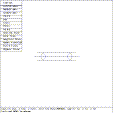
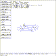

This tutorial illustrates the application of the SOL EDIT state to the torus solid.
 Figure (est-top): Top View of a Torus
mged> size 6
mged> in tor tor
Enter X, Y, Z of vertex: 0 0 0
Enter X, Y, Z of normal vector: 0 1 0
Enter radius 1: 1
Enter radius 2: 0.2
mged>
Figure (est-top) is the display of the torus solid in viewing state. Since the Z-axis is perpendicular to the viewing screen, a view of all sides cannot be seen.
 Figure (est-sed): The Torus in Solid Edit State
mged> Twist ROTY knob clockwise and restore
mged> Twist ROTX knob counter-clockwise and restore
mged>
These actions generate a view of the torus that shows all sides, as shown in Figure (est-sed) .
mged> Select the ``Solid Illum'' entry in the button menu
mged> Move the mouse out of the menu area
mged> Click the mouse to enter SOL EDIT state
mged>
The torus is a ring whose cross-section is a circle. The distance from the vertex to the center of the cross-section is r1 and r2 is the radius of the circular cross section.
Let the points I and O be the intersection of the line x=-z and the torus. Then,
I = (-(r2-r1) cos 45, 0, (r2-r1) cos 45 ) O = (-(r2+r1) cos 45, 0, (r2+r1) cos 45 )
{kind=link}
{kind=link}